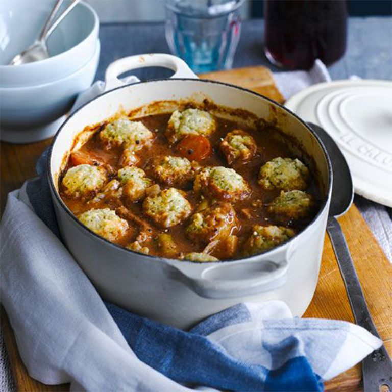

beefstew.jpg
spaghetti.jpg
Beef Stew and Dumplings
Beef Stew and Dumplings

Hearty Beef Stew and Dumplings Recipe
Every home cook should have a classic beef stew recipe in their repertoire, and this dish topped with light suet dumplings is our best yet. There's no need to brown the beef in advance, making it a hands-off meal with maximum results. Serve with buttered seasonal greens and we guarantee there'll be clean plates all round.
Ingredients
For the stew
- 2 tbsp. vegetable oil
- 1 onion, roughly chopped
- 1 .2kg braising steak, cut into roughly 4cm chunks
- Plain flour, to dust
- 2 medium parsnips, cut into 2.5cm (1in) pieces
- 2 medium carrots, cut into 2.5cm (1in) pieces
- 1 large leek, cut into 1cm (½in) slices
- 3 tbsp. tomato purée
- 200 ml (7fl oz) red wine
- 600 ml (1 pint) beef stock
- 3 fresh rosemary sprigs
For the dumplings
- 125 g (4oz) self-raising flour
- 60 g (2½oz) suet
- 1 tbsp. dried parsley
Method
- Preheat oven to 160°C (140°C fan) mark 3. Heat the oil in a medium-large casserole (that has a tight-fitting lid) and gently fry the onion for 5min until softened.
- Meanwhile, dry the beef pieces with kitchen paper and dust with the plain flour (tapping off excess). Add to the onion pan along with the vegetables, the tomato purée, wine, stock, rosemary and some seasoning (the meat and veg should just be covered with liquid, if not top up with more stock or water). Turn up the heat, bring to the boil, cover and put into the oven. Cook until the beef is tender - about 3hr.
- 30min before the beef is due to be ready, make the dumplings. Sift the flour into a large bowl and stir in the suet, parsley and lots of seasoning. Add 100ml (31/2fl oz) cold water and stir to make a soft (and slightly sticky) dough.
- Carefully take the casserole out of the oven, remove the lid and discard the rosemary sprigs. Check the seasoning of the stew. Pinch off walnut-sized pieces of the dumpling dough, gently roll into a ball and place on top of the stew, spacing apart. Return to the oven (without a lid) for the final 30min of cooking (or until the dumplings are lightly golden). Check the seasoning and serve with mashed potatoes, if you like.